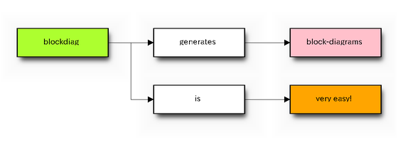
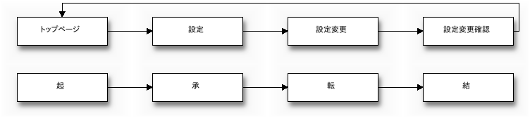

blockdiag - simple block-diagram image generator¶
blockdiag generate block-diagram image file from spec-text file.

Features¶
- Generate block-diagram from dot like text (basic feature).
- Multilingualization for node-label (utf-8 only).
- Sphinx embedding (using sphinxcontrib-blockdiag package)
Setup¶
by buildout¶
Make environment:
$ hg clone http://bitbucket.org/tk0miya/blockdiag
$ cd blockdiag
$ python bootstrap.py
$ bin/buildout
Copy and modify ini file. example:
$ cp <blockdiag installed path>/blockdiag/examples/simple.diag .
$ vi simple.diag
Please refer to spec-text setting sample section for the format of the simpla.diag configuration file.
spec-text setting sample¶
Few examples are available.
simple.diag¶
simple.diag is simply define nodes and transitions by dot-like text format:
diagram admin {
top_page -> config -> config_edit -> config_confirm -> top_page;
}

screen.diag¶
screen.diag is more complexly sample. diaglam nodes have a alternative label and some transitions:
diagram admin {
top_page [label = "Top page"];
foo_index [label = "List of FOOs"];
foo_detail [label = "Detail FOO"];
foo_add [label = "Add FOO"];
foo_add_confirm [label = "Add FOO (confirm)"];
foo_edit [label = "Edit FOO"];
foo_edit_confirm [label = "Edit FOO (confirm)"];
foo_delete_confirm [label = "Delete FOO (confirm)"];
bar_detail [label = "Detail of BAR"];
bar_edit [label = "Edit BAR"];
bar_edit_confirm [label = "Edit BAR (confirm)"];
logout;
top_page -> foo_index;
top_page -> bar_detail;
foo_index -> foo_detail;
foo_detail -> foo_edit;
foo_detail -> foo_delete_confirm;
foo_index -> foo_add -> foo_add_confirm -> foo_index;
foo_index -> foo_edit -> foo_edit_confirm -> foo_index;
foo_index -> foo_delete_confirm -> foo_index;
bar_detail -> bar_edit -> bar_edit_confirm -> bar_detail;
}
![diagram admin {
top_page [label = "Top page"];
foo_index [label = "List of FOOs"];
foo_detail [label = "Detail FOO"];
foo_add [label = "Add FOO"];
foo_add_confirm [label = "Add FOO (confirm)"];
foo_edit [label = "Edit FOO"];
foo_edit_confirm [label = "Edit FOO (confirm)"];
foo_delete_confirm [label = "Delete FOO (confirm)"];
bar_detail [label = "Detail of BAR"];
bar_edit [label = "Edit BAR"];
bar_edit_confirm [label = "Edit BAR (confirm)"];
logout;
top_page -> foo_index;
top_page -> bar_detail;
foo_index -> foo_detail;
foo_detail -> foo_edit;
foo_detail -> foo_delete_confirm;
foo_index -> foo_add -> foo_add_confirm -> foo_index;
foo_index -> foo_edit -> foo_edit_confirm -> foo_index;
foo_index -> foo_delete_confirm -> foo_index;
bar_detail -> bar_edit -> bar_edit_confirm -> bar_detail;
}](_images/blockdiag-e8cf43145fccb2a59e7b5e001496c88a4ae7f579.png)
multi-lingua.diag¶
multi-lingua.diag is multilingualization sample. diagram nodes have a UTF-8 label:
diagram admin {
// その 1: label 属性を使う方法
top_page [label = "トップページ"];
config [label = "設定"];
config_edit [label = "設定変更"];
config_confirm [label = "設定変更確認"];
top_page -> config -> config_edit -> config_confirm -> top_page;
// その 2: クオートする方法
"起" -> "承" -> "転" -> "結";
}

Requirements¶
- Python 2.4 or later (not support 3.x)
- Python Imaging Library 1.1.6 or later.
- funcparserlib 0.3.4 or later.
- setuptools or distriubte.
License¶
Python Software Foundation License.